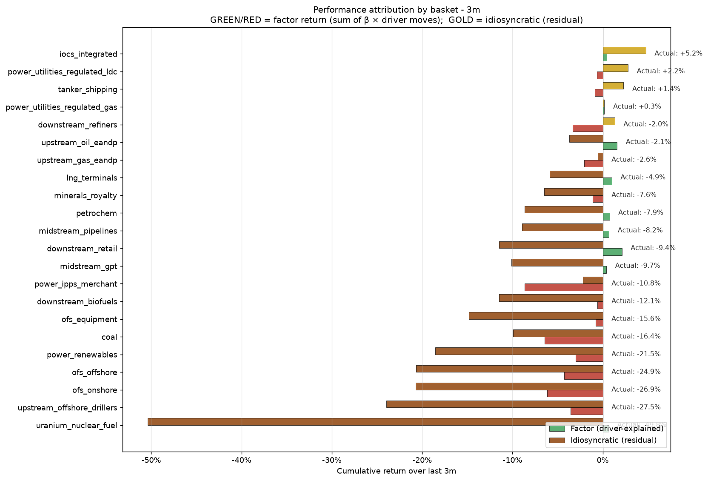
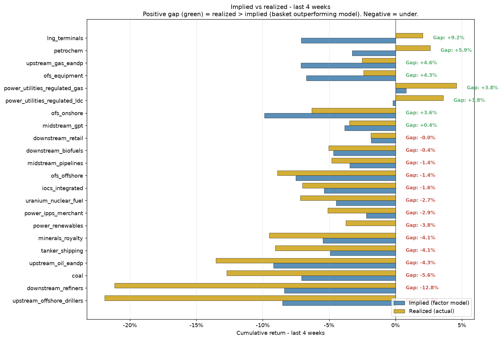
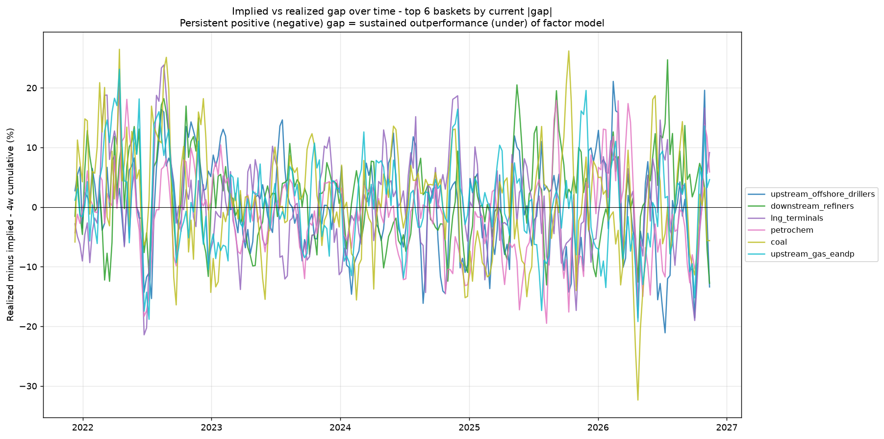

Phase 4 - Performance Attribution & Implied vs Realized
Decomposes recent returns into factor (driver-explained) and idiosyncratic (residual).
How to read attribution: for each basket, ACTUAL return = FACTOR return + IDIOSYNCRATIC return.
Factor return is what the basket's historical betas would predict given the actual driver moves over the window.
Idiosyncratic is everything else - could be unmodeled factors, news, mispricing, or noise.
A large positive idio means the basket outperformed what its driver model predicts; large negative means underperformed.
This is the lens for "what's actually moving here that I should investigate."
1. Basket attribution - 3 month

Top idio outperformers (3m)
| Basket | Actual | Factor | Idio |
|---|
| iocs_integrated | +5.2% | +0.4% | +4.8% |
| power_utilities_regulated_ldc | +2.2% | -0.6% | +2.8% |
| tanker_shipping | +1.4% | -0.9% | +2.3% |
| downstream_refiners | -2.0% | -3.3% | +1.3% |
| power_utilities_regulated_gas | +0.3% | +0.2% | +0.2% |
| upstream_gas_eandp | -2.6% | -2.0% | -0.5% |
| power_ipps_merchant | -10.8% | -8.6% | -2.2% |
| upstream_oil_eandp | -2.1% | +1.6% | -3.7% |
Top idio underperformers (3m)
| Basket | Actual | Factor | Idio |
|---|
| uranium_nuclear_fuel | -49.8% | +0.6% | -50.4% |
| upstream_offshore_drillers | -27.5% | -3.5% | -24.0% |
| ofs_onshore | -26.9% | -6.2% | -20.7% |
| ofs_offshore | -24.9% | -4.3% | -20.6% |
| power_renewables | -21.5% | -3.0% | -18.6% |
| ofs_equipment | -15.6% | -0.8% | -14.8% |
| downstream_retail | -9.4% | +2.1% | -11.5% |
| downstream_biofuels | -12.1% | -0.6% | -11.5% |
2. Implied vs realized - last 4 weeks

| Basket | Realized 4w | Implied 4w | Gap |
|---|
| upstream_offshore_drillers | -21.9% | -8.5% | -13.4% |
| downstream_refiners | -21.2% | -8.4% | -12.8% |
| lng_terminals | +2.1% | -7.1% | +9.2% |
| petrochem | +2.6% | -3.3% | +5.9% |
| coal | -12.7% | -7.1% | -5.6% |
| upstream_gas_eandp | -2.5% | -7.1% | +4.6% |
| upstream_oil_eandp | -13.5% | -9.2% | -4.3% |
| ofs_equipment | -2.4% | -6.7% | +4.3% |
| tanker_shipping | -9.1% | -4.9% | -4.1% |
| minerals_royalty | -9.5% | -5.5% | -4.1% |
| power_utilities_regulated_gas | +4.6% | +0.8% | +3.8% |
| power_utilities_regulated_ldc | +3.6% | -0.2% | +3.8% |
| power_renewables | -3.8% | -0.0% | -3.8% |
| ofs_onshore | -6.3% | -9.9% | +3.6% |
| power_ipps_merchant | -5.1% | -2.2% | -2.9% |
| uranium_nuclear_fuel | -7.2% | -4.5% | -2.7% |
| iocs_integrated | -7.0% | -5.4% | -1.6% |
| ofs_offshore | -8.9% | -7.5% | -1.4% |
| midstream_pipelines | -4.8% | -3.4% | -1.4% |
| midstream_gpt | -3.5% | -3.8% | +0.4% |
| downstream_biofuels | -5.0% | -4.7% | -0.4% |
| downstream_retail | -1.9% | -1.8% | -0.0% |
Gap over time - top 6 baskets by current |gap|

3. Top idiosyncratic name movers (3m)
↑ Outperformed factor model
| Ticker | Name | Node | Actual | Factor | Idio |
|---|
| RRC | Range Resources | upstream_gas_eandp | +24.1% | -1.6% | +25.7% |
| BKH | Black Hills Corporation | power_utilities_regulated_gas | +16.8% | -1.3% | +18.1% |
| NWE | NorthWestern Energy | power_utilities_regulated_gas | +17.7% | +0.7% | +17.0% |
| CVI | CVR Energy | downstream_refiners | +9.3% | -7.5% | +16.9% |
| FRO | Frontline | tanker_shipping | +12.8% | -3.9% | +16.7% |
| NRP | Natural Resource Partners | minerals_royalty | +16.7% | +0.1% | +16.6% |
| DHT | DHT Holdings | tanker_shipping | +12.9% | -1.8% | +14.7% |
| GRNT | Granite Ridge Resources | upstream_oil_eandp | +18.8% | +4.5% | +14.2% |
| SEI | Solaris Energy Infrastructure | ofs_onshore | -2.1% | -13.7% | +11.6% |
| MPC | Marathon Petroleum | downstream_refiners | +9.4% | -1.8% | +11.3% |
| APA | APA Corporation | upstream_oil_eandp | +11.4% | +1.4% | +9.9% |
| SR | Spire | power_utilities_regulated_ldc | +8.7% | -1.2% | +9.8% |
| EE | Excelerate Energy | lng_terminals | +2.7% | -7.1% | +9.8% |
| TEN | Tsakos Energy Navigation | tanker_shipping | +8.6% | -1.1% | +9.7% |
| INSW | International Seaways | tanker_shipping | +6.2% | -3.3% | +9.5% |
↓ Underperformed factor model
| Ticker | Name | Node | Actual | Factor | Idio |
|---|
| SOC | Sable Offshore | upstream_offshore_drillers | -170.9% | -2.0% | -168.9% |
| AESI | Atlas Energy Solutions | ofs_onshore | -84.3% | -21.1% | -63.2% |
| LBRT | Liberty Energy | ofs_onshore | -56.2% | -9.1% | -47.2% |
| PUMP | ProPetro | ofs_onshore | -57.0% | -12.0% | -45.0% |
| XIFR | XPLR Infrastructure (ex-NEP) | power_renewables | -50.0% | -7.1% | -42.8% |
| KGS | Kodiak Gas Services | midstream_gpt | -42.8% | -4.4% | -38.4% |
| NESR | National Energy Services Reunited | ofs_onshore | -57.8% | -22.1% | -35.7% |
| OII | Oceaneering International | ofs_offshore | -39.8% | -5.9% | -33.9% |
| HE | Hawaiian Electric Industries | power_utilities_regulated_gas | -25.6% | +8.2% | -33.8% |
| ACDC | ProFrac Holding | ofs_onshore | -42.0% | -8.6% | -33.3% |
| XPRO | Expro Group | ofs_onshore | -35.6% | -2.9% | -32.6% |
| CLMT | Calumet | downstream_refiners | -31.3% | +1.2% | -32.5% |
| BTU | Peabody Energy | coal | -42.7% | -10.9% | -31.8% |
| MNR | Mach Natural Resources | minerals_royalty | -32.7% | -1.0% | -31.8% |
| CLB | Core Laboratories | ofs_onshore | -32.9% | -2.9% | -30.0% |